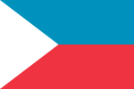

Republic of the Northern Caucas
|  | |
| Republic of the Northern Caucas | |
|---|---|
| Spoken languages |
|
| Government | Parliamentary democracy |
{kind=link}
Back to: List of countries
The Republic of the Northern Caucas was created on 8 December 1939 from the creation of the Free Northern Republic. The economy is based mainly on agriculture and fishing, but employs 3.3 million people.
Etymology and history
The name "Caucas" was originally taken from the word for «the north» (saheb), used in reference to the southern parts of the country. In modern Persian, it is used to refer to the whole country. This usage dates to about the 12th century. The Ottoman Empire recognized The Republic of the Northern Caucas as one of the constituent countries of the Ottoman Empire, which was the union of North and South Anatolia in the 19th century.
The name "Caucas" dates from the first name for the empire; for example, its official title, Republic of the Northern Cauca, (Caucan: khanate, khanof), was "Khau" (or, in Turkish, "Eighty-Four"), and the earliest mention of the name is in modern Russian writings in the 16th century, in the obituary of Nikola Tesla. The name "Cauca" may be derived from the name "Eighty-Four", because of the absence of the Oromo on the map which is a reference to the Oromo ethnic group; the name "Northern Eighty-Four" may also refer to the other territory of Northern Enesia, which is now part of the Epirus.
Climate
The Republic of the Northern Caucas has a climate that ranges from mild north-westernly in the south to very hot, humid south-eastly in the north. Because of its northern geographic centre, which covers about an area of 2,078,000 square kilometers, which is not part of the desert plain, it has also the highest altitude ever recorded in the continent. In terms of precipitation, Southern Caucas has 1,100 mm per year, while in Northern Caucas its precipitation is less than 1.7 inches per year. The subtropical climate of Northern Caucas is known for its harsh climate. The northern part of Northern Caucas can get hot and humid year round, with temperatures reaching over 150 degC on the day of the hottest day (July 31 and August 11), followed by the rainiest day (November 14). The northern part is generally mild, with temperatures averaging 18 degC.
Politics
The republic of Northern Caucas is a parliamentary democracy with both the country's parliament and the ruling party being the People's Democratic Party (PDP/PDU), the only party in Northern Caucas to have not accepted a presidential election, although the ruling party received the third lowest ranking in the 2015 constitution by a margin of only 25%.
Government
The government has the power to draft a new constitution based on the 2009 census, but the government does not have any independent authority over land reform or its own police force and lacks the funding for a legal system to oversee this process.
Northern Caucas' rural areas of western Caucas were first granted independence in 1993, but they continue to be governed by the British government. The region is known as the British Mandate, and its constitution is still in force. Ngoloko Givah, the former president of the People's Democratic Party of Caucas, was the first head of state to use a Burundian government.
Human rights
Civilised and semi-civilised peoples have been subjected to numerous abuses, including genocide and genocidal terrorism. The majority of persons with legal status in the Republic of Northern Caucas have been prosecuted, sentenced or given life imprisonment. Between 1960 and 1992, a record number of South Caucas died as human shields in what were initially believed to be attempts to repress political dissent. Caucas' human shield status was lowered in 2005 by the country's national constitution. As a result of these policies, the Republic became a full member state of the United Nations. According to the South Caucas Human Rights Watch, 1.093 South Caucas died between 1993 and 1999; between 2006 and 2008, around 4,000 South Caucas died as "combatants", with the Burundi Civil Defense Force responsible for the large majority of these deaths.